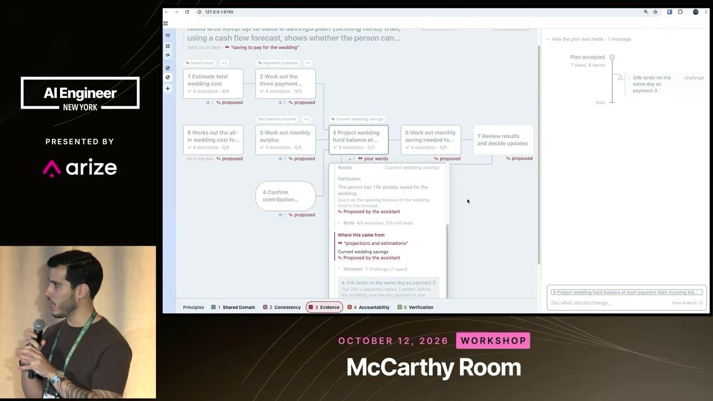
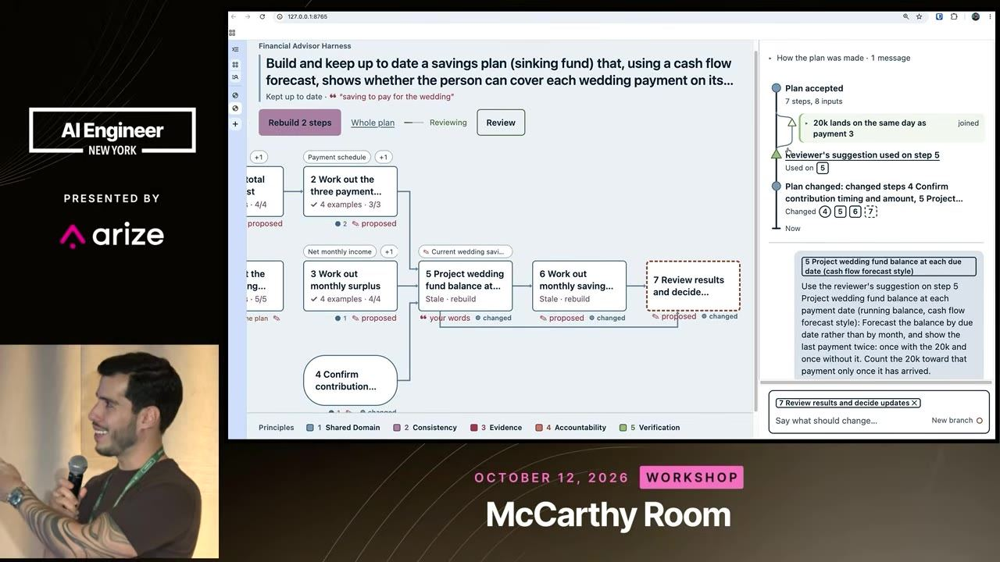
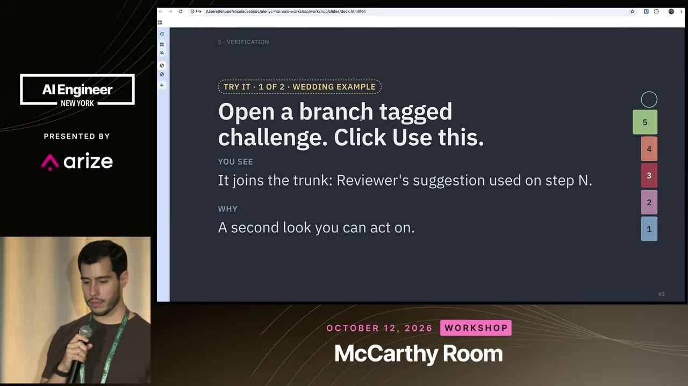

essencial do dia: O Monzo mostra cinco princípios de harness para finanças e por que toda conta deve rodar em código testado.
Cinco princípios para agentes de análise financeira
Stop Chatting With Spreadsheets
Em finanças, o gargalo do agente é confiança. Cinco princípios de projeto do harness, com a conta feita em código, entregam mais que um chat esperto.
Depois deste talk você consegue projetar um harness que mantém as contas em código testado e rotula cada dado como fato, suposição ou interpretação
Em 3 frases
Francesco Galletta e Felippe Felisola Caso, do Monzo, dizem que gerar uma análise financeira com IA já é rápido. O difícil é confiar no resultado quando o assunto é dinheiro.
Eles propõem cinco princípios para montar um harness (estrutura que cerca o agente): domínio compartilhado, consistência, evidência, responsabilidade e verificação. O exemplo vivo é o orçamento de um casamento.
A tese técnica central é que toda conta deve rodar em código testado e versionado, fora da cabeça do modelo, porque o modelo dá respostas diferentes para a mesma pergunta.
Antes de ler
- Harness estrutura que roda o agente analogia no glossário
- Sistema determinístico deterministic system (mesma entrada, mesma saída) analogia no glossário
- Tool calling chamada de ferramentas por um agente analogia no glossário
- Spec-driven development desenvolvimento guiado por especificação
- Provenance proveniência (origem da informação) analogia no glossário
- Conjunto de ouro (golden dataset) exemplos com veredicto humano confiável
Planejar antes de calcular
O harness entrevista o usuário até o plano ficar claro, em vez de aceitar tudo e sair implementando. O modelo e a pessoa raramente definem os termos do mesmo jeito, então a conversa de ida e volta cria um vocabulário comum. Só depois o plano vira um conjunto de passos de decisão.
 (ampliar imagem)
(ampliar imagem)
A conta fica no código
Cálculo é parte determinística do problema. O harness força o agente a escrever a conta uma vez, testá-la e rodá-la sempre que precisar. Sem isso, a mesma pergunta gera respostas diferentes e o código é reinventado a cada sessão. O harness também avisa se a versão do código mudou.
45:33 Cada passo de cálculo tem código e teste próprios, rodados sem o agente improvisar.
Evidência: fato, suposição e interpretação
O modelo não distingue fato duro de estimativa. O harness rotula cada dado como fato (extrato bancário), suposição (o que o agente inferiu) ou interpretação (fala solta no chat). Ao clicar num número, a pessoa segue o rastro até a origem. A história do arquivo mestre mostra o risco de mudanças sem rastro.


(ampliar imagem)Mais 2 ideias deste talk
Responsabilidade com poucos portões de alto sinal
Aprovar cada mudança vira ruído, e não revisar nada tira o controle. Os palestrantes defendem poucos portões nos pontos que importam. A conversa também ramifica e volta ao tronco, então uma frase solta não destrói a análise inteira. O ramo de pergunta lateral não contamina o resto.


(ampliar imagem)Verificação com um segundo ponto de vista
Um agente separado revisa o plano e as suposições, e o resultado volta ao tronco e altera o plano. Segundo os palestrantes, só pôr um LLM como juiz sem laço de retorno não melhora a decisão. Exemplos de ouro também têm viés, então vale conferir contra referências externas ao domínio.


(ampliar imagem)O harness é um exemplo didático e os palestrantes admitem que o código foi gerado por vibe coding e que parte é superengenharia. Eles não mostram medição de acerto, taxa de erro nem comparação com um chat comum. A afirmação de que o princípio vale para finanças vem de experiência no Monzo, sem dados públicos, e eles evitam detalhes por propriedade intelectual. Uma pergunta da plateia sobre como provar confiança na interface ficou sem resposta direta.
Teste você mesmo
Responda de cabeça antes de abrir. Lembrar com esforço é o que fixa.
- lembrar Por que a conta deve rodar em código e não na cabeça do modelo?
Ver resposta
Porque cálculo é a parte determinística do problema. O modelo dá respostas diferentes para a mesma pergunta e reinventa o código a cada sessão. O harness força escrever a conta uma vez, testá-la e rodá-la sempre.
- aplicar Como você rotularia os dados de uma análise do seu trabalho segundo a regra de evidência?
Ver resposta
Fato é o que vem de uma fonte, como um extrato. Suposição é o que o agente inferiu. Interpretação é fala solta no chat. Cada número deve permitir seguir o rastro até a origem.
- criticar Que provas faltam ao harness apresentado?
Ver resposta
Os palestrantes admitem código gerado por vibe coding e parte superengenhada. Não mostram acerto, taxa de erro nem comparação com um chat comum. A experiência no Monzo não traz dados públicos, e a pergunta sobre provar confiança na interface ficou sem resposta direta.
Conta recorrente em script testado
Você precisa de: Python, um agente de código e uma conta que você repete, como categorização de gastos
- Escolha uma conta recorrente e peça ao agente que escreva um script com testes para ela.
- Rode o script em três conjuntos de dados e confirme os resultados à mão.
- Peça agora ao agente só que chame o script e rotule cada número como fato, suposição ou interpretação, com a origem.
Deu certo se: A mesma pergunta feita duas vezes dá o mesmo número, e cada valor do resultado tem rótulo e origem.
O que fazer com isso
- Mova toda conta recorrente do seu trabalho (fechamento mensal, categorização de gastos) para um script testado e peça ao agente apenas para chamá-lo.
- Peça ao agente que rotule cada dado de uma análise como fato, suposição ou interpretação, com a origem ao lado.
- Antes de apresentar um número, confira contra uma fonte fora dos seus exemplos, como outra área da empresa ou um dado público.
- Defina poucos pontos de aprovação humana, nos julgamentos que mudam a decisão, em vez de aprovar cada passo.
Conversa com outros talks
- Calibrar um LLM juiz com 30 casos e 80% de acordo · 5 out · em comum: Conjunto de ouro (golden dataset), Harness, LLM-as-a-judge
- Troca de modelo: rode seus cenários antes · 19 out · em comum: Harness, LLM-as-a-judge, Tool calling
- Acordo travado: como dar autonomia a agentes que movem dinheiro · 5 nov · em comum: Auto mode, Sistema determinístico